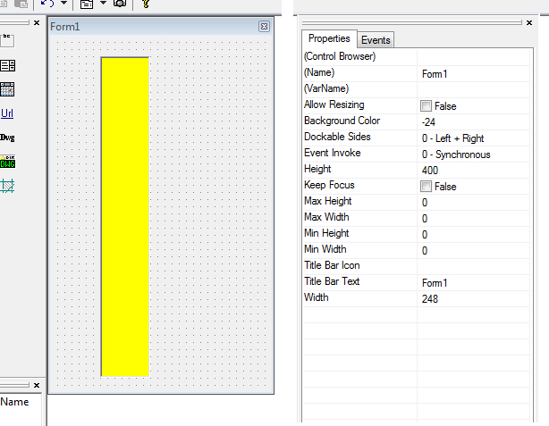
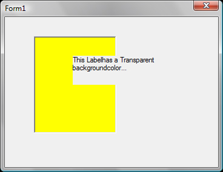

2010-12-16 14:27 UTC
I made a list of all kinds of defects, bugs, remarks... that I met
My version is 6.0.1.3 - Windows Vista + ACad2008
Controls and Forms
Palette / ControlBar are croped ?
When AllowResizing=false the palette is croped at about height = 160 ? (AllowResizing=true OK)
See images
Tab sequence
Problem with Tab-key sequence between txtbox (didn't try others) in Modeless / ControlBar / Palette (KeepFocus=true)
Please lunch and read TabSequence.odcl
Label with Transparent background color
Transparent background is not... (this problem appeared with v6)
See image
TextBox with Filter property = 3 (numeric units)
The filter allows following entries : " ' / + - . e ( but not * )
ComboBox : SelChanged event
SelChanged event is triggered even if the selection hasn't changed (after clicking on the same item)
My version is 6.0.1.3 - Windows Vista + ACad2008
Controls and Forms
Palette / ControlBar are croped ?
When AllowResizing=false the palette is croped at about height = 160 ? (AllowResizing=true OK)
See images
Tab sequence
Problem with Tab-key sequence between txtbox (didn't try others) in Modeless / ControlBar / Palette (KeepFocus=true)
Please lunch and read TabSequence.odcl
Label with Transparent background color
Transparent background is not... (this problem appeared with v6)
See image
TextBox with Filter property = 3 (numeric units)
The filter allows following entries : " ' / + - . e ( but not * )
ComboBox : SelChanged event
SelChanged event is triggered even if the selection hasn't changed (after clicking on the same item)
Attachments

Palette.jpg (168043 bytes) Palette lunched.jpg (47051 bytes)
Palette lunched.jpg (47051 bytes)- TabSequence.odcl (951 bytes)

LabelTransparent.jpg (38560 bytes)

{kind=link}
{kind=link}
{kind=link}